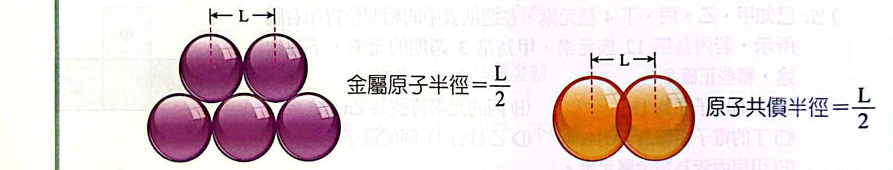
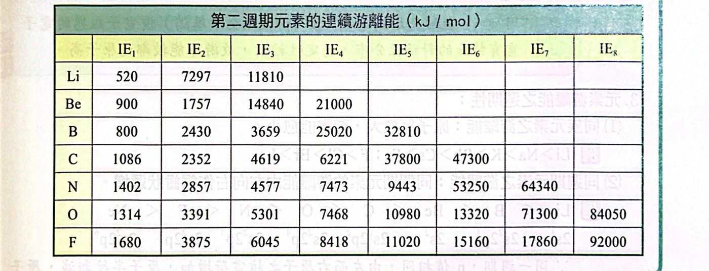
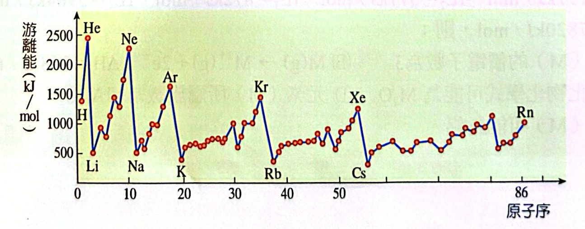
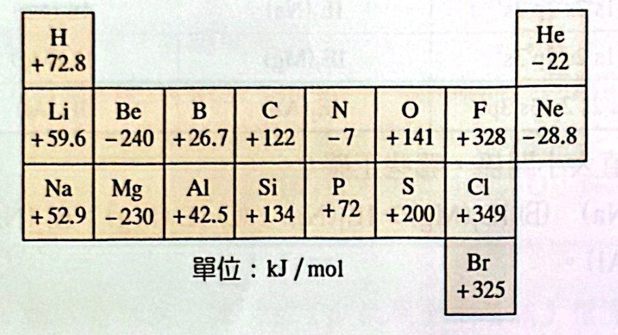
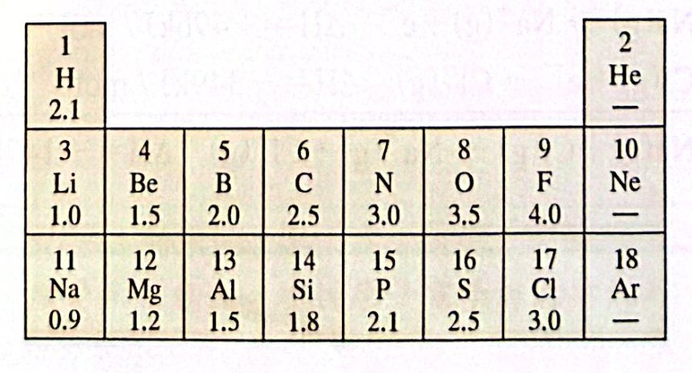

重點整理
一、原子半徑與離子半徑
- 同族由上到下，半徑漸增：主量子數愈大，電子離核愈遠。
例：I ＞ Br ＞ Cl ＞ F；Cs ＞ Rb ＞ K ＞ Na ＞ Li
- 同週期由左到右，半徑漸減：n 相同，核電荷愈大、吸引力愈大。
例：Na ＞ Mg ＞ Al ＞ Si ＞ P ＞ S ＞ Cl ＞ Ar
- 等電子系列，原子序愈大半徑愈小：核對電子吸引力愈大。
例：7N3− ＞ 8O2− ＞ 9F− ＞ 10Ne ＞ 11Na+ ＞ 12Mg2+ ＞ 13Al3+
- 同一核電荷，電子愈多半徑愈大（電子互斥）：Na ＞ Na+；F− ＞ F

金屬原子半徑與共價半徑 ＝ L/2
二、游離能（IE）
1. 定義
將氣態原子最外層的一個電子移去所需的能量：M(g) → M+(g) ＋ e−，ΔH ＝ 游離能 ＞ 0（吸熱）
連續游離能（以 Na 為例）：
- IE1：Na(g) → Na+(g) ＋ e− 496 kJ/mol
- IE2：Na+(g) → Na2+(g) ＋ e− 4563 kJ/mol
- IE3：Na2+(g) → Na3+(g) ＋ e− 6913 kJ/mol
- 同一原子：IE1 ＜ IE2 ＜ IE3 ＜ …（離子帶的正電愈多，愈難再拿走電子）
- 若 IEn＋1 ≫ IEn，表示有 n 個價電子（拿完價電子後變成鈍氣組態，再拿就非常難）。

第二週期元素的連續游離能（kJ/mol）
2. 影響游離能的因素
- 原子大小：半徑愈大，游離能愈小。
- 核電荷：核電荷愈大，游離能愈高。
- 電子組態：組態愈穩定，游離能愈高。
- 鈍氣 ns2np6：同週期中最大。
- s 全滿（ns2）：比鄰居大，如 Be ＞ B、Be ＞ Li。
- p 半滿（np3）：比鄰居大，如 N ＞ O、N ＞ C。
3. 游離能的週期性
- 同族：原子序愈大，游離能愈小。Li ＞ Na ＞ K ＞ Rb ＞ Cs；F ＞ Cl ＞ Br ＞ I
- 同週期：由左向右呈鋸齒狀遞增：
Li ＜ B ＜ Be ＜ C ＜ O ＜ N ＜ F ＜ Ne

元素第一游離能對原子序作圖（鈍氣在峰頂、鹼金屬在谷底）
- 同電子數的原子或離子：原子序愈大，游離能愈大。F− ＜ Ne ＜ Na+ ＜ Mg2+ ＜ Al3+
- 陰離子失去 1 個電子比中性原子、陽離子容易：F+ ＞ F ＞ F−；Ne ＞ F−
- 鹵素陰離子失去一個電子所需能量：Cl− ＞ F− ＞ Br− ＞ I−（即電子親和力大小順序）
三、電子親和力（參考教材）
1. 定義
從氣態陰離子 X− 移去一個電子的能量變化，稱為元素 X 的電子親和力：
X−(g) → X(g) ＋ e− ΔH ＝ X 的電子親和力
- Cl：Cl−(g) → Cl(g) ＋ e− ΔH ＝ ＋349 kJ/mol ⇒ 反過來 Cl ＋ e− → Cl− 放熱 349，Cl 容易接受電子。
- Be：Be−(g) → Be(g) ＋ e− ΔH ＝ −240 kJ/mol ⇒ Be ＋ e− → Be− 吸熱 240，Be 不易接受電子。

部分元素的電子親和力（kJ/mol）
電子親和力愈大 ⇒ 中性原子得到一個電子時放熱愈多、對電子吸引力愈大。
2. 影響因素
核電荷愈小、半徑愈大、中性原子組態愈穩定 ⇒ 愈不易接受電子，電子親和力愈小。
3. 特性
- 非金屬的電子親和力一般較大，金屬較小。
- 大多數原子電子親和力為正值（得電子放熱），但 2A 族、8A 族、N 為負值（得電子吸熱）：Be（2s2 全滿）、N（2p3 半滿）、Ne（全滿）組態穩定。
- 同週期中電子親和力最大的是 7A 族（得一個電子就成鈍氣組態）。
- 鹵素：Cl ＞ F ＞ Br ＞ I（Cl 最大，不是 F！）
⇒ 游離能 Cl− ＞ F−（Cl−→Cl：＋349；F−→F：＋333）
- 中性原子的電子親和力小於游離能：最大電子親和力 Cl 349，最小游離能 Cs 368 kJ/mol。
四、電負度（陰電性）
1. 定義
兩原子鍵結時，原子對鍵結電子吸引力強弱的相對值。
- 鮑林定義：氟最大，定為 4.0，其他元素為相對值。
- 電負度愈大，對共用電子對的吸引力愈大。

第 1～3 週期元素的電負度
2. 規律
- 同族：原子序愈大，電負度愈小。Li ＞ Na ＞ K ＞ Rb ＞ Cs；F ＞ Cl ＞ Br ＞ I
- 同週期：原子序愈大，電負度愈大。F ＞ O ＞ N ＞ C ＞ B ＞ Be ＞ Li
3. 應用
- 判斷金屬或非金屬：以 H 的 2.1 為大約分界，金屬電負度小、非金屬大。
- 判斷化學鍵類型：
- 電負度差大 → 離子鍵：Na(0.9)、Cl(3.0)，差 2.1 → NaCl 為離子鍵
- 電負度差小 → 共價鍵：H(2.1)、Cl(3.0)，差 0.9 → HCl 為共價鍵
例題與類題
看答案與詳解收起
答(D)
解
- (A) ✗ Na+、F− 等電子（10 e−），原子序大的 Na+ 較小。
- (B) ✗ 同族往下變大，K+ ＞ Na+。
- (C) ✗ 等電子，Mg2+ ＜ Na+。
- (D) ○ 等電子（18 e−），S2− 原子序小，半徑較大。
看答案與詳解收起
答(B)
解
- (A) ✗ 同核電荷，電子多的較大：O− ＞ O+
- (B) ○ 同週期往右變小：C ＞ N
- (C) ✗ 同族往下變大：Se ＞ S
- (D) ✗ S2− ＞ S
- (E) ✗ 同週期往右變小：Na ＞ Mg
看答案與詳解收起
答(A)(B)(C)
解IE3（872）→ IE4（5964）突然暴增 ⇒ 3 個價電子，屬 3A 族。
- (A) ○
- (B) ○ M → M2+ 需要 IE1 ＋ IE2 ＝ 191 ＋ 577 ＝ 768 kJ/mol
- (C) ○ 常見 ＋3 價，氧化物 M2O3
- (D) ✗ 應為 3A 族
- (E) ✗ 鋁的 IE1 約 578 kJ/mol，與題目 191 不符（題目數據不是鋁）。
看答案與詳解收起
答(A)(E)
解IE1（496）→ IE2（4563）暴增 ⇒ 1 個價電子，就是 Na（對照講義數據）。
- (A) ○ 價電子組態 ns1
- (B) ✗ 是鹼金屬
- (C) ✗ Na2O 溶於水成 NaOH，呈鹼性
- (D) ✗ 鈉容易失去電子，是強還原劑
- (E) ○ 失去第 2 個電子太難，只形成 ＋1 價
看答案與詳解收起
答(B)(D)(E)
解
- (A) ✗ 同一原子 IE2 ＞ IE1
- (B) ○ 同週期往右 IE1 變大：Mg ＞ Na
- (C) ✗ Na+ 已是鈍氣組態（1s22s22p6），再拿電子極難：IE2(Na) ≫ IE2(Mg)
- (D) ○ IE3(Na) 拿的是內層電子，遠大於 IE3(Al)（拿 Al 的最後一個價電子）
- (E) ○ IE2(Na) 拿內層，IE2(Al) 拿 3s 電子
看答案與詳解收起
答(B)
解第二游離能要大 ⇒ 失去 1 個電子後就是鈍氣組態 ⇒ 1A 族：K（K+ 為 [Ar]，再拿極難）。
S、Ca、Sr 的第二個電子仍是價電子。
看答案與詳解收起
答(C)(D)(E)
解
- (A) ✗ He 游離能最大：He ＞ H ＞ Li
- (B) ✗ 鋸齒狀：Be ＞ B ＞ Li
- (C) ○ 都是鈍氣組態，同族往下半徑變大、游離能變小
- (D) ○ 同核電荷，正電愈多愈難拿：O+ ＞ O ＞ O−
- (E) ○ 等電子（10 e−），原子序愈大愈難：Al3+ ＞ Mg2+ ＞ Na+
看答案與詳解收起
答(D)(E)
解
- (A) ✗ K+ 是鈍氣組態（拿內層），Ca+ 還有 4s1：K+ ＞ Ca+
- (B) ✗ 等電子，Ne（原子序大）＞ F−
- (C) ✗ Mg（3s2 全滿）＞ Al
- (D) ○ 同週期往右 F ＞ O
- (E) ○ 同族往上 Ne ＞ Ar
看答案與詳解收起
答(B)(C)
解
- (A) ✗ Be 的電子親和力（Be−→Be）與 Be 的游離能（Be→Be+）是兩個不同的反應，沒有互為相反數的關係。
- (B) ○ 兩者都是 F−(g) → F(g) ＋ e−，完全相同。
- (C) ○ 中性原子電子親和力 ＜ 游離能（349 ＜ 1251）
- (D) ✗ F 得一個電子是放出能量（且第二週期中 F 放最多）
- (E) ✗ 鹵素中 Cl ＞ F，不是單調遞減
看答案與詳解收起
答(A)(E)
解
- (A) ○ M−(g) → M(g) ＋ e− 的 ΔH 即電子親和力，可正可負（如 Cl 為正、Be 為負）
- (B) ✗ 鈍氣游離能大，但電子親和力為負
- (C) ✗ 同週期並非一路增加（2A、5A、8A 特別小）
- (D) ✗ 相反：Be 為負值，O 為正值
- (E) ○ Na 得電子放 52.9、Cl 失電子吸 1251 ⇒ ΔH ≈ ＋1198 ＞ 0
看答案與詳解收起
答(A)(D)
解得一個電子放出能量 ⇔ 電子親和力為正值：H（＋72.8）✓、C（＋122）✓
He（−22）、Be（−240）、N（−7）得電子要吸熱。
看答案與詳解收起
答(B)
解
- (A) ✗ 同族往下電負度減小
- (B) ○ 同週期往右電負度增大
- (C) ✗ F 電負度最大是因為最會吸引電子，不是最易失去
- (D) ✗ 相反：電負度大 → 非金屬性強
- (E) ✗ 共用電子對偏向電負度大的原子
看答案與詳解收起
答(A)
解
- (A) ○ 鮑林以 F ＝ 4.0 為標準
- (B) ✗ 電負度大 → 吸引（得到）電子能力強
- (C) ✗ 差距大 → 易形成離子鍵
- (D) ✗ 由上而下電負度減小
單元練習
看答案與詳解收起
答(B)
解甲 ＝ Al(13)，乙在其右 ＝ Si(14)；下一排為第 4 週期：丁在甲下方 ＝ Ga、戊 ＝ Ge、丙 ＝ Zn。
半徑：往右變小、往上變小 ⇒ 右上角的乙（Si）最小。
看答案與詳解收起
答(A)(C)(E)
解
- (A) ○ 同族往下變大
- (B) ✗ 等電子，Mg2+ ＜ Na+
- (C) ○ 等電子，F− ＞ Na+
- (D) ✗ Li+ ＜ Na+
- (E) ○ 同核電荷，電子多的 Cr2+ 較大
看答案與詳解收起
答(C)
解Al：1s22s22p63s23p1。IE1 拿 3p、IE2 拿第一個 3s、IE3 拿最後一個 3s：3s → ∞。
看答案與詳解收起
答(B)(D)(E)
解IE4（1041）→ IE5（3844）暴增 ⇒ 4 個價電子，第三週期 ⇒ Si（14）。
- (A) ✗ 原子序 14
- (B) ○
- (C) ✗ Si 是類金屬
- (D) ○
- (E) ○ SiO2
看答案與詳解收起
答(B)
解換算成 kJ（×4.18）：1090 kcal ≈ 4560 kJ、346.6 kcal ≈ 1450 kJ、434.2 kcal ≈ 1815 kJ。
Na 的值最大、遠大於 Mg、Al ⇒ Na 已被拿到內層 ⇒ 是 IE2（Na 的 IE2 4563、Mg 1451、Al 1817）。
看答案與詳解收起
答(B)
解He（2372）＞ H（1312）＞ Be（900）＞ Li（520）
He 是鈍氣最大；H 只有一個 1s 電子離核很近。
看答案與詳解收起
答(C)(D)
解
- (A) ✗ 正電愈多愈難拿：Fe3+ ＞ Fe2+ ＞ Fe
- (B) ✗ 游離能同族往下減小：F ＞ Cl ＞ Br
- (C) ○ 鋸齒狀：N（半滿）＞ O ＞ C
- (D) ○ 等電子（18 e−），原子序大者較難：K+ ＞ Ar ＞ Cl−
- (E) ✗ Na+ 是鈍氣組態最難；Al+（3s2）＞ Mg+（3s1）⇒ Na+ ＞ Al+ ＞ Mg+
看答案與詳解收起
答(A)(D)(E)
解甲、乙都是 21 個電子 ＝ Sc：乙 3d14s2 為基態，甲 3d24s1 為激發態。丙 ＝ 18 個電子的 ＋3 離子 ＝ Sc3+；丁 ＝ Ar。
- (A) ○ 激發態 → 基態，放出能量
- (B) ✗ 乙 → 丙是游離（Sc → Sc3+），要吸收能量
- (C) ✗ 乙的 IE3 是拿最後一個價電子；自丙（Sc3+，鈍氣組態）再拿一個是 IE4，大得多
- (D) ○ 丙、丁同為 18 個電子，Sc3+ 核電荷大得多，較難游離
- (E) ○ 都是 Sc
看答案與詳解收起
答(E)
解甲 O、乙 Li、丙 C、丁 S、戊 As。
- (A) ✗ As 為主族（5A）
- (B) ✗ 同族往上游離能大：O ＞ S
- (C) ✗ 1s 電子跑到 2s 是變成激發態，要吸收能量
- (D) ✗ 違反洪德定則，應分別填入 2px、2py
- (E) ○ IE1 與 IE2 差很大 ⇒ 只有 1 個價電子 ⇒ Li
看答案與詳解收起
答(A)
解94X 是 Be（1s22s2），2 個價電子：E1 ＜ E2，而 E3 要拿 1s 內層電子 ⇒ E3 遠大於 E1、E2。
實際值約 E1 ≈ 0.9、E2 ≈ 1.76、E3 ≈ 14.8（×103 kJ/mol），只有 (A) 符合。
看答案與詳解收起
答(C)
解
- (A) ✗ 同族往下減小
- (B) ✗ 偏向電負度大的原子
- (C) ○ 電負度差愈大，鍵的極性（離子性）愈大
- (D) ✗ 同週期往右增大
看答案與詳解收起
答(A)(D)
解
- (A) ○ Be 電子親和力為 −240：Be− → Be ＋ e− 放熱，所以 Be ＋ e− → Be− 吸熱
- (B) ✗ F− → F ＋ e− 的 ΔH ＝ ＋328，吸熱
- (C) ✗ ＋496 − 349 ＝ ＋147，吸熱
- (D) ○ Cl− → Cl 吸 349、Na → Na− 放 52.9 ⇒ ΔH ≈ ＋296，吸熱
看答案與詳解收起
答(D)
解Na(g) → Na+ ＋ e− ＋496
Cl(g) ＋ e− → Cl− −348
相加：Na ＋ Cl → Na+ ＋ Cl− ＋148
題目是逆反應 ⇒ ΔH ＝ −148 kJ
看答案與詳解收起
答(B)(E)
解
- (A) ✗ 游離能與電子親和力是不同的過程，大小不同
- (B) ○ 第二週期 F 的電子親和力最大，得電子放出能量最多
- (C) ✗ 同週期往右半徑減小
- (D) ✗ 中性原子電子親和力 ＜ 游離能（Cl：349 ＜ 1251）
- (E) ○
看答案與詳解收起
答(B)
解五者都是 18 個電子（[Ar] 組態）。
- (B) ✗ S2− 有 16＋2 ＝ 18 個電子
- (A)(C) ○ 最外層都是 3p
- (D) ○ 等電子，原子序愈小半徑愈大
- (E) ○ Cl 的電子親和力是所有元素中最大
看答案與詳解收起
答(D)
解看哪裡「突然暴增」：
- 丙：失去第 3 個時暴增 → 2 個價電子 → Mg
- 甲：第 4 個暴增 → 3 個價電子 → Al
- 乙：第 5 個暴增 → 4 個價電子 → Si
(A) ○ Al 半徑 ＜ Mg (B) ○ Si 電負度 ＞ Mg (C) ○ Al2O3 為兩性氧化物 (E) ○ MgO 溶於水呈鹼性
(D) ✗ SiC（碳化矽）是共價網狀固體，熔點高、很硬，但脆、沒有延展性
看答案與詳解收起
答(D)
解
- (A) ✗ As 是類金屬
- (B) ✗ 電負度最大的是右上方的 P（B 2.0、P 2.1），Ga 很小
- (C) ✗ 第一游離能最小的是 Al 或 Ga（左下方），B 較大
- (D) ○ 右上方的 P 非金屬性最強
- (E) ✗ Al(OH)3 為兩性，可溶於強酸也溶於強鹼
看答案與詳解收起
答(A)(B)(E)
解
- (A) ○ 鹼金屬失去第 2 個電子要拿內層，IE2 遠大於鹼土
- (B) ○ 電子親和力最大的是 Cl，捕獲一個電子放出能量最多
- (C) ✗ 第一游離能最大的是 He（銫是最小之一）
- (D) ✗ 任何原子 IE2 ＞ IE1
- (E) ○
看答案與詳解收起
答(B)(E)
解先算出每個性質的趨勢：
- Ⅰ Li、Be、B、C 的 IE1：520、900、801、1086 → 升、降、升 ⇒ 丁
- Ⅱ C、N、O、F 半徑：一路下降 ⇒ 丙
- Ⅲ F、Cl、Br、I 電子親和力：328、349、325、295 → 先升後降 ⇒ 甲
- Ⅳ C、N、O、F 電負度：一路上升 ⇒ 戊
- Ⅴ F、Ne、Na、Mg 的 IE1：1681、2081、496、738 → 升、大降、升 ⇒ 乙
選項中正確的是 (B) Ⅱ－丙、(E) Ⅴ－乙。
看答案與詳解收起
答(B)
解鹵素往下：半徑變大、第一游離能變小、價電子數都是 7、電子親和力 Cl 最大（非單調）、沸點變高。
看答案與詳解收起
答(C)
解圖中尖峰在原子序約 3、11、19、37（鹼金屬），每個週期由尖峰逐漸下降 ⇒ 原子半徑（鹼金屬最大，往右漸小）。
若是第一游離能，尖峰應在鈍氣（2、10、18、36），且週期內是逐漸上升。